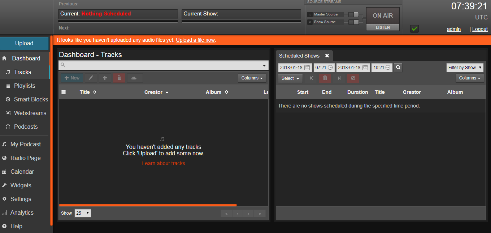
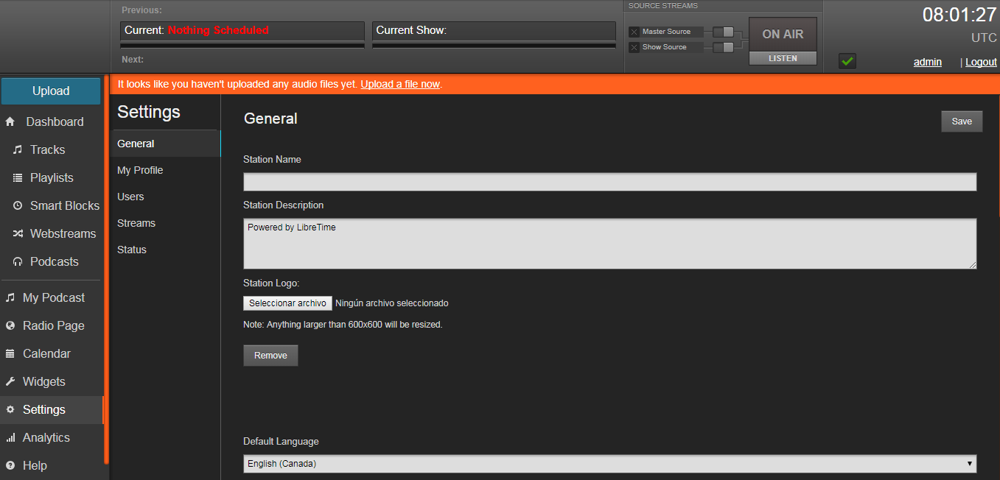
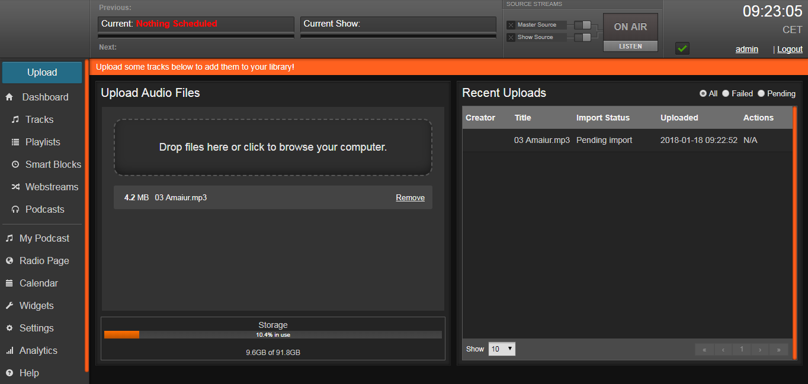
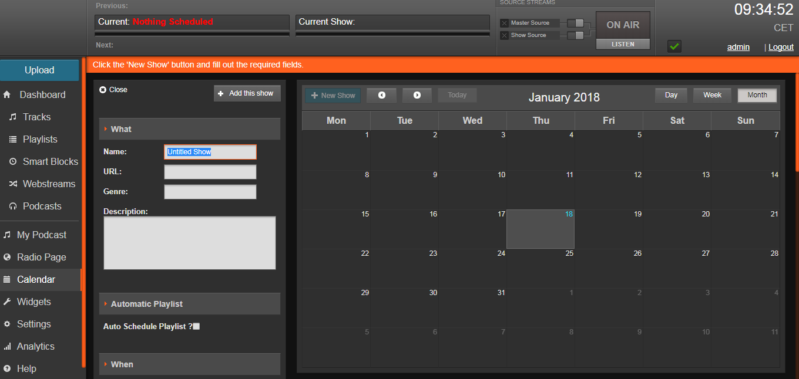
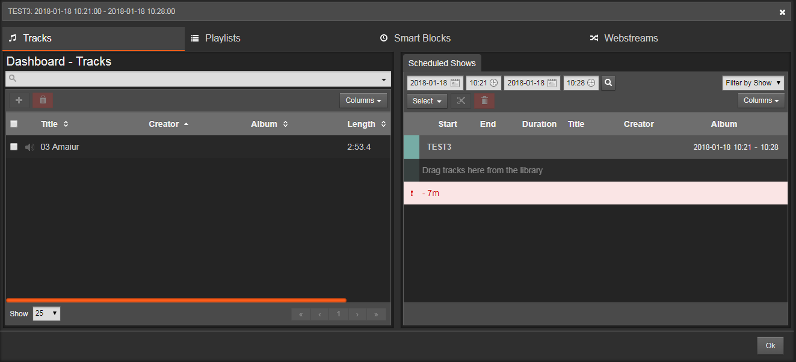

Empezamos este manual partiendo de la instalación limpia realizada en LibreTime y VirtualBox. El propósito de este manual documentar el interface de administración Web de LibreTime.

Configuración básica inicial
Realizamos algunos cambios básicos en 'Settings' (en la barra lateral vertical izquierda en la parte inferior opción de configuración)

- Idioma por defecto: 'Español'.
- Zona horaria (importante para funcionamiento posterior de emisiones): 'Europe/Madrid'.
- La semana comienza en Lunes.
No olvidar salvar preferencias con botón 'save'.
Subir un audio
Tal como sugiere LibreTime vamos a empezar subiendo un audio de muestra. En la esquina superior izquierda existe un botón 'Upload'.

Cuando finaliza la importación los archivos se almacenan en /srv/airtime/stor/imported/ en el sistema.
Crear un show o programa
Ahora que hemos subido nuestro primer audio es hora de programar un 'show' en la opción de calendario del menú. Seleccionamos una fecha del calendario pinchando sobre ella (o usando el botón '+New Show').

Para crear un 'show' debemos fijar una fecha y hora de inicio y final y darle un nombre como mínimo.
Una vez creado y cuando ya lo vemos en el calendario hacemos click sobre la cita en el calendario para abrir un menú contextual y seleccionamos 'Schedule Tracks'. Existen reglas para evitar por ejemplo solapar dos shows.

Arrastramos y soltamos las pistas de audio del panel izquierdo al derecho para ir creando el programa. LibreTime nos ira indicando el tiempo restante para llenar el tiempo que hemos defnido que debe durar.

Cuando se inicie el programa en la fecha hora prefijada se activan los controles.

Podemos escucharlo ya en streaming desde cualquier otro equipo accediendo con un enlace en mi caso http://192.168.221.111:8000/airtime_128.